Щелчок по картинке — в полный размер (и ×2, ×4). Цикл Аниматрицы в Zerkalius Code на сцене «1» — что нашлось, 2026-09-24. Кратко то же — в борт-журнале (v0.089, запись после Code 35.55, и словарь). Готовым к просмотру, без разбора — «Битмультфильмы».
Коротко. Волна Аниматрицы (без нулей) — это XOR «с накоплением» по строкам. Поэтому всё решают степени двойки: цикл 128 проходов при 128 строках, у каждой строки свой период, картинка складывается из ромбов, и размер ромбов виден по двоичной записи номера прохода. Нули добавляют только разгон — к 65-му проходу они вымирают.
Журнал Аниматрицы (кнопка ⏺ Журнал в Code) со сцены «1» дал текст: 128 строк × 257 символов из «1», «0» и пробелов, проход 15. Правило волны детерминированное: каждая строка переписывается по уже переписанной строке над ней — два одинаковых символа → пробел, символ и пробел → символ, два разных → верхний. Дальше всё досчитано вне страницы тем же правилом по всем проходам. Главный вывод подтвердила сама страница на 667-м проходе: «🔁 цикл: период 128, повтор после 65-го прохода».
Нулей было 976 — они протекают вниз столбиками и гасятся друг о друга; к 65-му проходу их нет. Дальше — чистый цикл: проход 193 = проход 65, символ в символ. Если заменить нули единицами, цикл 128 идёт сразу.
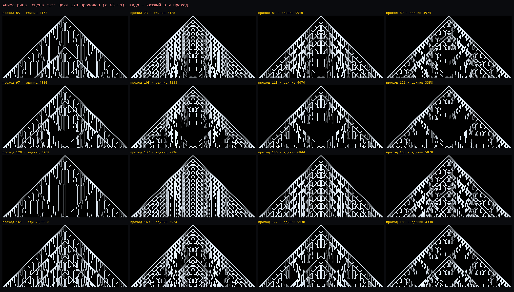
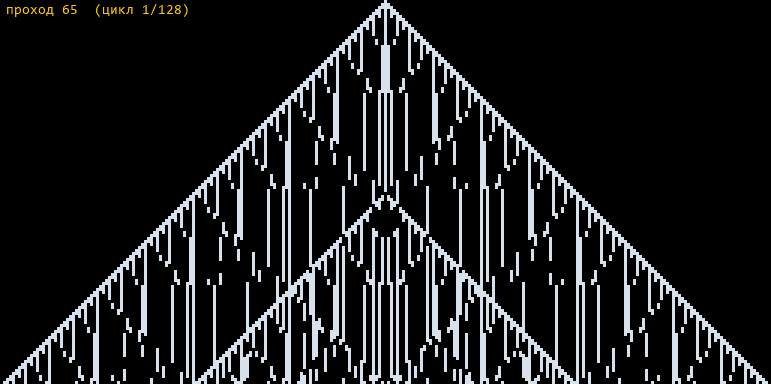
Без нулей проход делает строку i равной XOR всех строк над ней и её самой. Через k проходов
строка собирается из строк выше с коэффициентами C(i−j+k−1, k−1) по модулю 2 — треугольник Паскаля по чётности. По
теореме Лукаса (1878) через 2m проходов, если 2m ≥ числа строк, остаётся только сама строка.
Отсюда период — ближайшая степень двойки не меньше числа строк: 128 строк → 128, 100 → 128, 200 → 256.
Кадр через k проходов после 65-го — это XOR копий 65-го кадра, сдвинутых вниз на все d, у
которых нет общих двоичных единиц с k−1 (d & (k−1) = 0). Пример: проход 155 (он же 667-й),
k = 90, k−1 = 1011001 → сдвиги 0, 2, 4, 6, 32, 34, 36, 38; проверено — совпадает символ в символ.
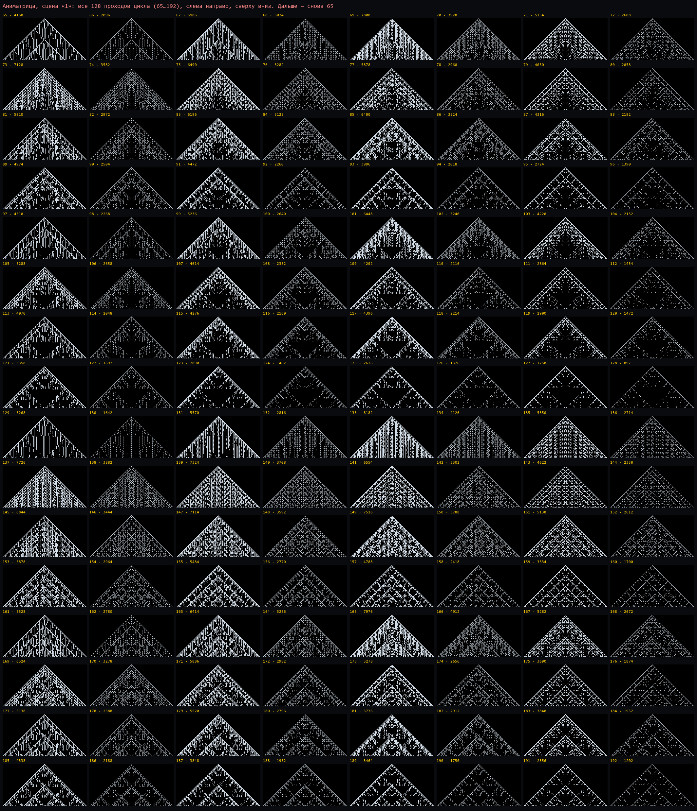
| строки | 0 | 1 | 2–3 | 4–7 | 8–15 | 16–31 | 32–63 | 64–127 |
|---|---|---|---|---|---|---|---|---|
| период | 1 | 2 | 4 | 8 | 16 | 32 | 64 | 128 |
Период строки — ближайшая степень двойки больше её номера (Лукас по одной строке: ей нужны только строки выше). Треугольник — часовой механизм: каждая полоса вдвое медленнее верхней, общий период — период нижней. В Code: ▤ Полосы периодов в «Виде».
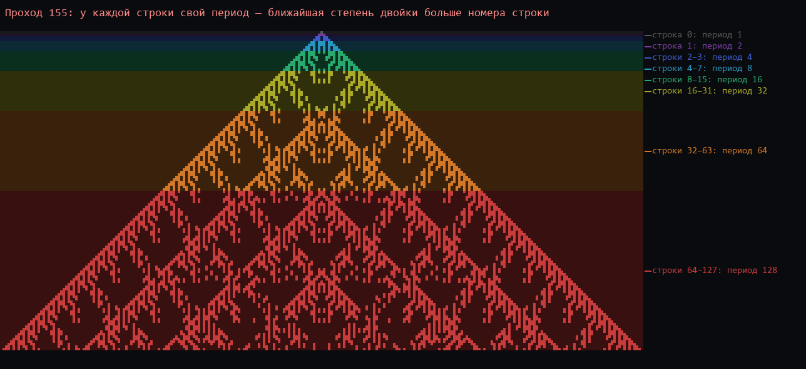
Картинка почти повторяется при сдвиге по диагонали: (16 строк, ±16 символов) — 89,5% клеток, 32 — 90%, 8 и 24 — около 70%, мимо на один символ — 59% (уровень случайности). Ромбы — 32 строки высотой, соседние сдвинуты на 16. Причины: Правило 90 ведёт узор ровно на символ за строку (диагонали под 45°), а треугольник Серпинского сложен из своих копий, сдвинутых по диагонали. В Code: ◇ Ромбическая сетка.
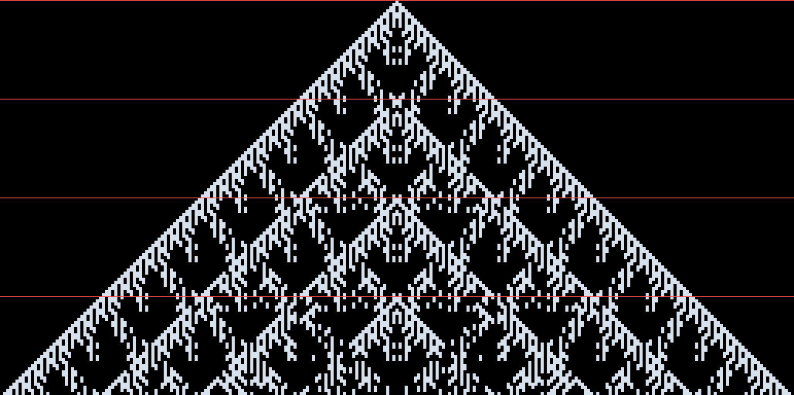
Каждый нулевой разряд 2j в двоичной записи k−1 добавляет копию со сдвигом 2j и включает ромбы
этого размера. Проход 977 (k = 16, 0001111) — три размера сразу: 16, 32, 64. Проход 129 (0111111)
— только 64. Проход 155 (1011001) — 32 плюс утолщения. Проход 192 (1111110) — крупных нет. В Code:
сетка с шагом «авто — по проходу» рисует включённые размеры сама, с легендой.
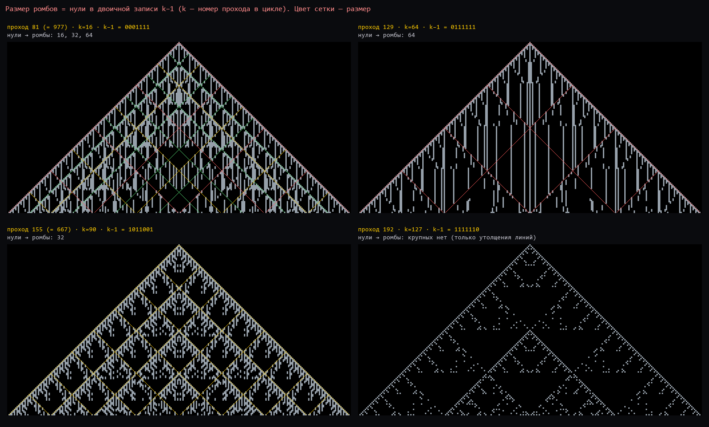
На проходе 155 — 21 целый ромб; с верхним совпадают на 83–97% (на средней вертикали — 97%). За весь цикл ромбов 2688 (21 место × 128 проходов), разных 1541: 1206 встречаются один раз, 130 — по 4, 128 — по 6, два почти пустых — по 20. Верхний ромб (строки 0–32) повторяется через 64 прохода, у него 64 разных кадра.
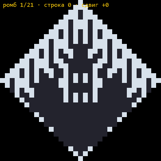
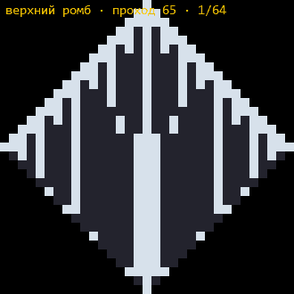
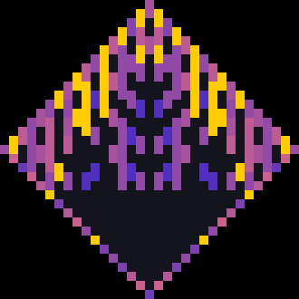
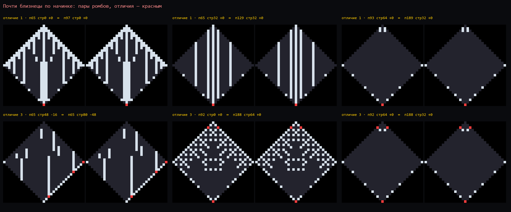
Идея пользователя: свернуть каждый ромб в один бит так, чтобы зеркальные близнецы получали одинаковый бит, а у симметричного ромба бит зависел от соседей через ось. Обоим условиям отвечает чётность ромба — XOR всех его клеток: у близнецов единиц поровну — бит один и тот же; в симметричном ромбе каждая клетка равна своей соседке через ось, пары гасят друг друга в XOR, и остаются только клетки на самой оси. А XOR — родная операция волны.
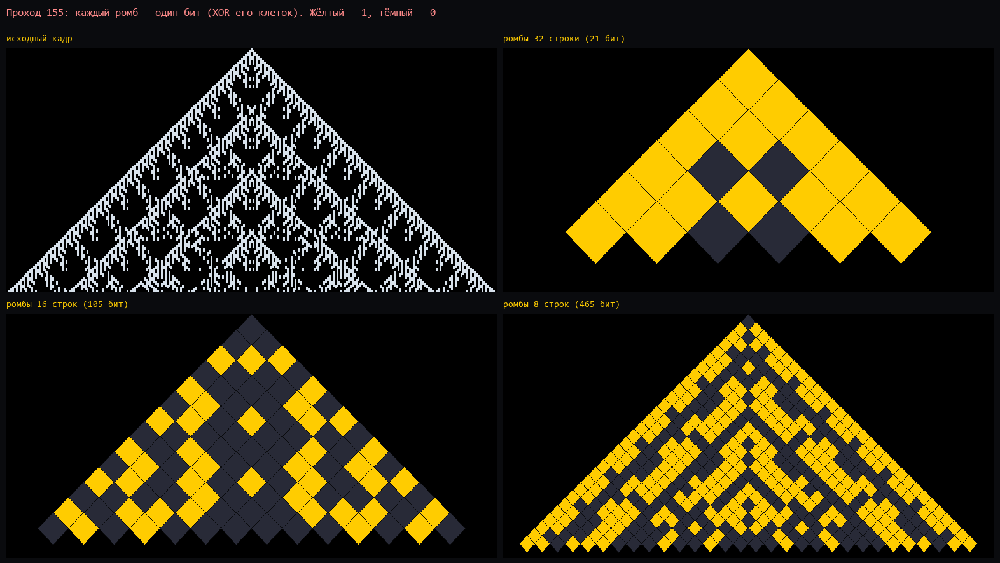
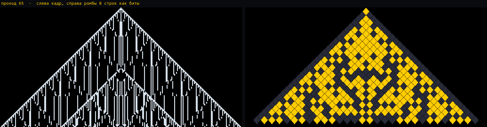
Ромбы из ромбов. Треугольник из ромбов-битов лежит в той же геометрии, что и исходный (бит через клетку, как у Правила 90), поэтому его можно свернуть ещё раз — и ещё. Лестница с ромбами высотой 4: 128 строк → 62 → 29 → 13 → 5 → 1.
| ступень | 1 | 2 | 3 | 4 | 5 |
|---|---|---|---|---|---|
| строк · бит | 62 · 1953 | 29 · 435 | 13 · 91 | 5 · 15 | 1 · 1 |
| период | 128 | 128 | 128 | 128 | 128 |
| разных кадров за цикл | 128 | 128 | 128 | 91 | 2 |
000111101111, без единого нарушения. Но 128 на 12 не делится — на стыке циклов ритм сбивается
(по кругу совпадение 94%). Откуда 12 — разобрано (v0.015):
d & (k−1) = 0 (закон «кадр — XOR сдвинутых копий»);
совпадает на всех 128.1 + x¹² = (1+x)⁴·(1+x+x²)⁴. Множитель (1+x)⁴ даёт ритм 4, а
1+x+x² — ритм 3 (кубические корни из единицы): вместе 12. Строк всего 128 — ряд обрывается, отсюда сбой на
стыке циклов.111101111000, повторённый
через 12. Складывается по ступеням: после первой ступени столбец повторяется через 4 (0111), на второй-третьей
ритм смешанный, с четвёртой — ровно 12: четвёрка первой свёртки × тройка, набегающая дальше. Тройку даёт именно ромб:
одномерная модель (только строки, окно 5 строк с шагом 2) даёт шаг 5, а не 12 — нужен захват соседних столбцов и
перекрытие соседних ромбов по краям. Волна этот след лишь «читает»; чистый D с шагом 12 выходит только при отсчёте от
начала цикла (65-й проход) — от шума, одной точки или других кадров D не периодичен. Вопрос закрыт: остальное —
комбинаторика лестницы.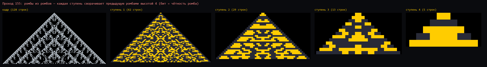
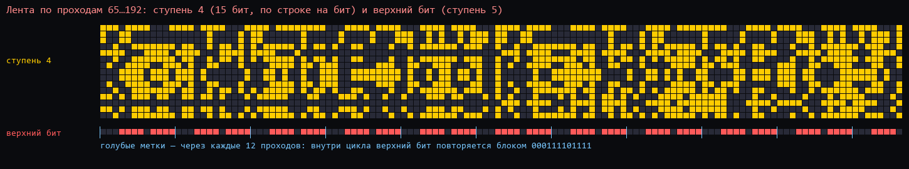
Идея пользователя: на экране строки идут по кругу — снизу треугольник (начало текста, строка 0 — вершина), сверху
трапеция (конец текста); они касаются в центре. Отразить нижний треугольник вверх через эту точку (строка i →
строка 127−i) и сложить XOR с тем, что там есть. Треугольник симметричен слева направо, поэтому отражение через
центр — то же, что отражение вверх. Сделано для верхней половины (строки 64–127), нижняя не тронута.
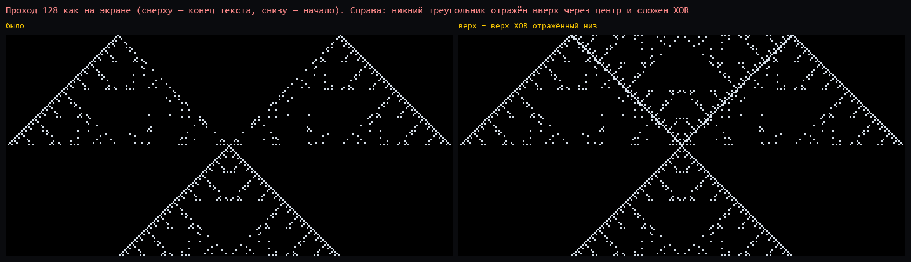
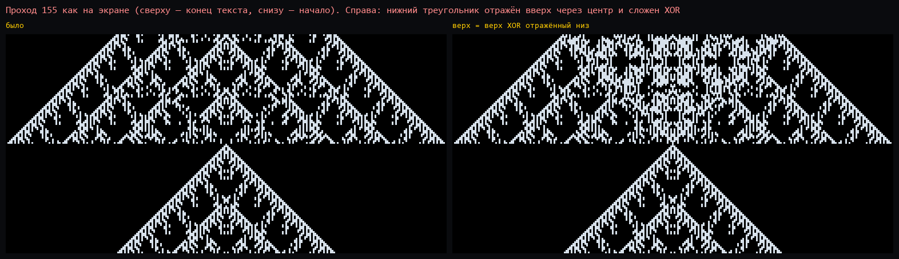
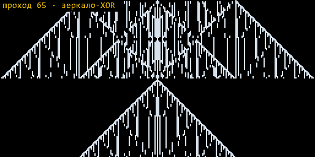
И обратно: верх вниз, в противоположные стороны. Боковые части верхней трапеции отражены через центральную точку (поворот на 180°): верхний левый угол ложится в пустоту справа от нижнего треугольника, верхний правый — слева; XOR с нижней половиной. И вариант «оба сразу» — каждая половина XOR отражённая другая, от исходного кадра.
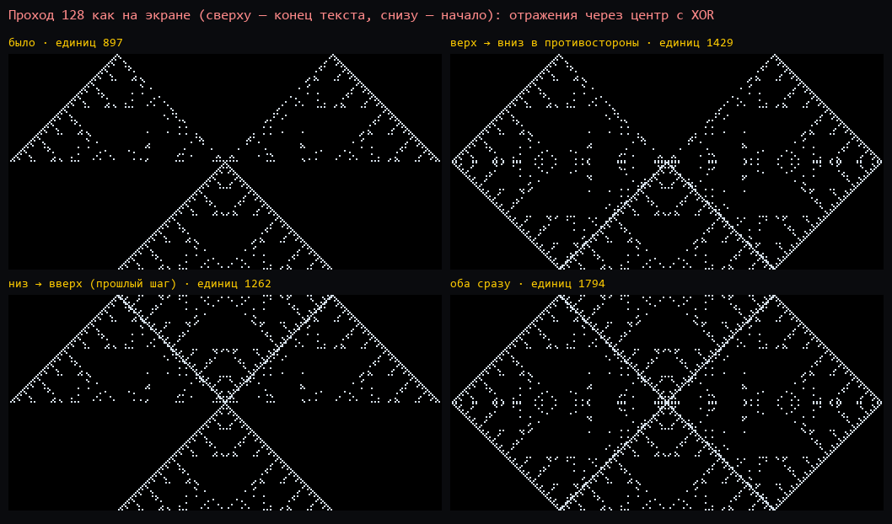
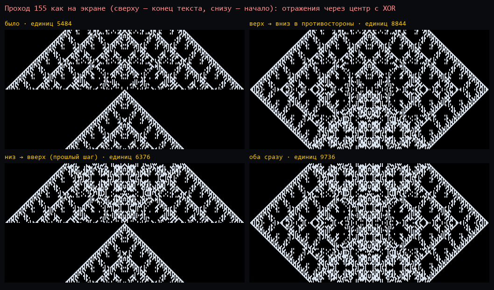
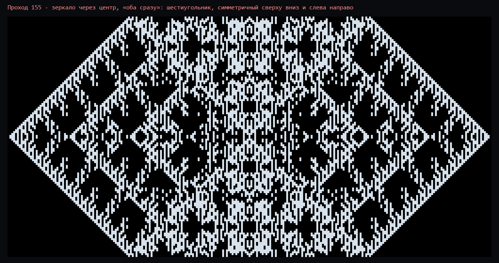
Слово пользователя, глядя на треугольник с ромбической сеткой: «почти надпись». Проверили буквально: каждый ромб сетки — буква, одинаковые ромбы — одна и та же буква, зеркальный ромб — та же буква строчной. Ромбы 16 строк, проход 155.
ряд 0 (край): Ш | а б · а б · а б · а б · а б · а слово «аб», длина 2 ряд 1: А Э | д е в з · д е в з · д е в слово «девз», длина 4 ряд 2: Б Д Ю | г ж и Л · г ж и Л · г слово «гжиЛ», длина 4Длина слова ряда
e — ближайшая степень двойки больше e+1: 2, 4, 4, 8, 8, 8, 8, 16, …; слово начинается не
позже уровня 2e+1. Проверено на всех 128 проходах цикла (ромбы 8 строк — ряды 0–6, ромбы 4 — ряды 0–14), без
исключений. Это тот же закон, что «у каждой строки свой период» (раздел 4), только вдоль стороны: у треугольника
Серпинского стороны равноправны с основанием, и чем дальше ряд от края, тем медленнее его часы.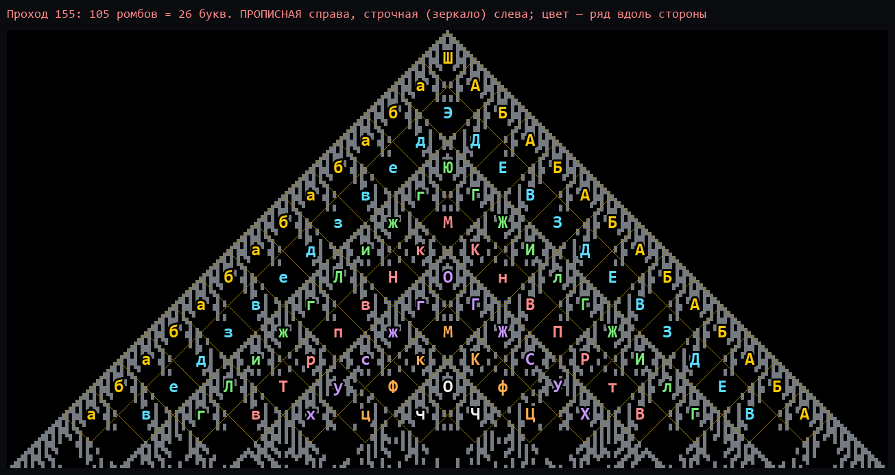
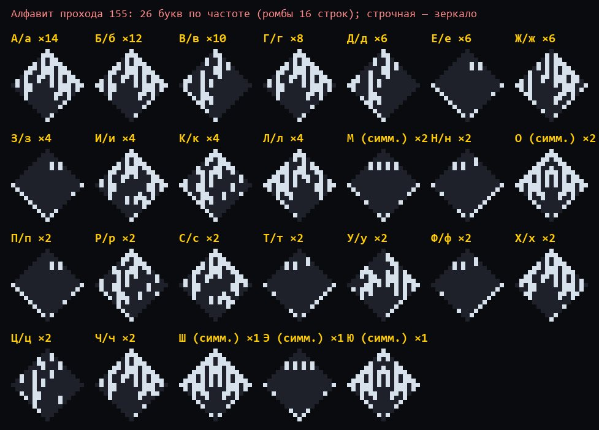
Откуда нули: генератор «Правило 90» пишет внутри треугольника «0» там, где клетка пустая, а «Обрезать фон» превращает в пробелы только то, что снаружи; ширина — 2·строк+1 (у 128 строк — 257, как в журнале сцены «1»). Тем же способом построены треугольники на 50, 64, 100, 128, 200, 256 строк (сид «1») и прогнаны волной с нулевого прохода:
| строк | 50 | 64 | 100 | 128 | 200 | 256 |
|---|---|---|---|---|---|---|
| период | 64 | 64 | 128 | 128 | 256 | 256 |
| нули вымерли, цикл с прохода | 33 | 33 | 65 | 65 | 129 | 129 |
| нулей в начале | 2083 | 3367 | 8749 | 14197 | 36247 | 58975 |
Шире (v0.006): 17 прогонов — другие правила, сиды, без обрезки фона. Период всегда P — ближайшая степень двойки не меньше числа строк: при любом правиле, сиде, с обрезкой и без, и даже когда нули не вымирают. А вот «половина + 1» — не общий закон, а свойство треугольника Серпинского (правило 90 или 18 из одной точки, с обрезкой):
| треугольник | 64 строки: цикл с | 100 строк: цикл с | нули |
|---|---|---|---|
| правило 90 и 18, сид 1 | 33 (= P/2 + 1) | 65 (= P/2 + 1) | вымирают |
| правило 150, сид 1 | 40 | 80 (оба — 5/8 P) | вымирают |
| правило 30, сид 1 | 10 | 11 | вымирают |
| правило 110, сид 1 | 8 | 8 | вымирают |
| правило 90, сид 11 | 18 | — | вымирают |
| правило 90, сиды 101, 1101, 10011 | 33, 18, 18 | — | живут в цикле |
| правило 90 и 30, без «Обрезать фон» | 32 (= P/2) | 64 (= P/2) | живут в цикле |
Нули вымирают не всегда: при сидах 101, 1101, 10011 и без обрезки фона они живут внутри цикла, а период всё равно P. Без обрезки цикл начинается ровно на P/2.
Правило 150 вблизи (100 строк). Исходный треугольник почти весь из нулей (7348 синих против 2652 единиц). За первые 10 проходов нулей остаётся 502, к 40-му — 16, а дальше несколько одиночек держатся до 80-го: они и тянут разгон до 5/8 периода. С 80-го — чистый цикл 128 (проход 208 = проход 80). У цикла правила 150 свой рисунок — сквозные вертикальные «стволы» и треугольники по бокам, а не дышащий вложенный треугольник, как у правила 90.
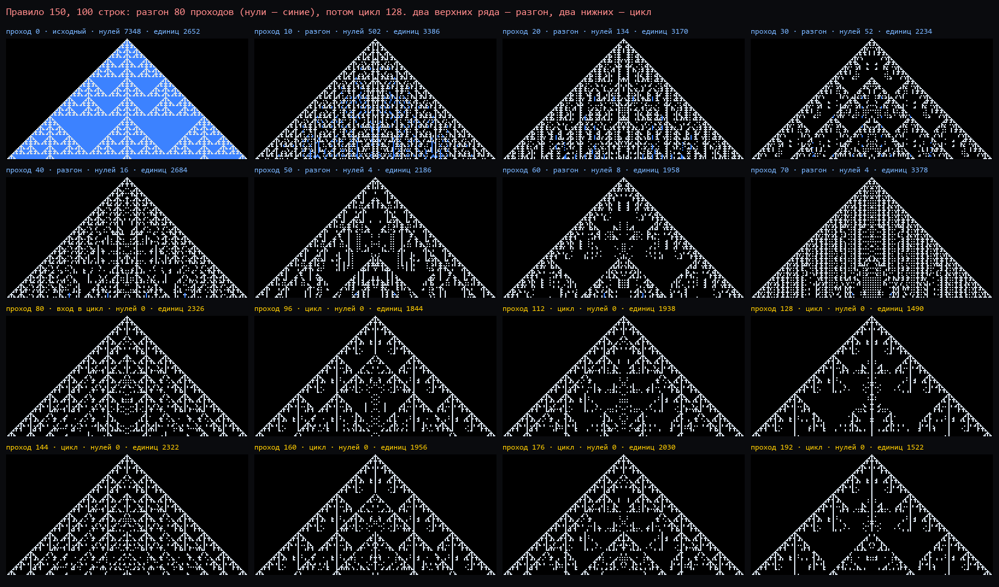
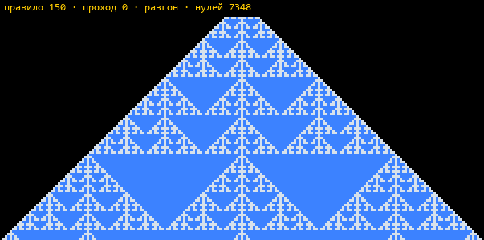
Правило 30 вблизи (100 строк) — полная противоположность. Правило 30 хаотическое: в исходном треугольнике нулей и единиц почти поровну (4804 и 5196), без правильного рисунка. Нули гибнут быстро: 3360 после первого прохода, 453 после пятого, к 11-му — ни одного. Разгон — всего 11 проходов. Цикл на вид — шум без треугольников Серпинского, но строгий: период ровно 128, проход 139 = проход 11 символ в символ (4927 единиц и там, и там). Левый край треугольника правила 30 и в цикле держит правильные косые полосы, правый — хаос.
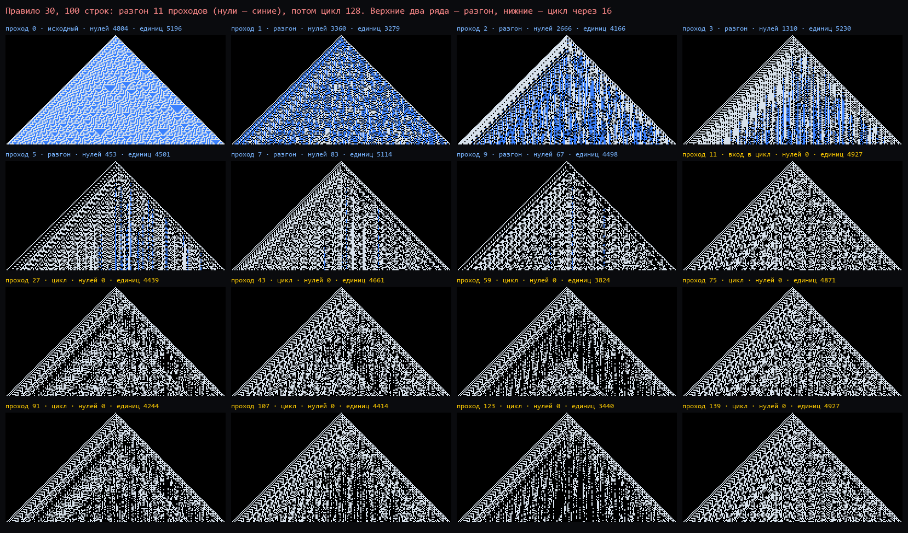
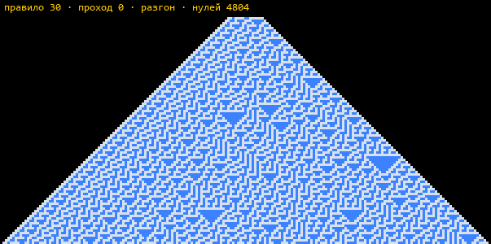
Правило 110 вблизи (100 строк). Из одной точки правило 110 растёт только влево, и треугольник выходит половинкой — с вертикальным правым краем. Нулей в начале 2174 при 2876 единицах; разгон самый короткий из всех — 8 проходов (1682 нуля после первого, 234 после шестого, к 8-му — ни одного). Дальше — цикл ровно 128, проход 136 = проход 8 (по 2550 единиц). Форма треугольника на период не влияет: он всё равно задан числом строк. Зеркальной симметрии у половинки, понятно, нет — «⫼ Ось симметрии» здесь ничего не покажет.
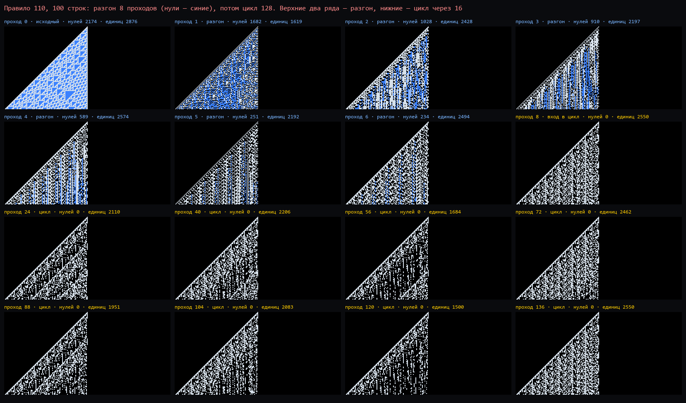
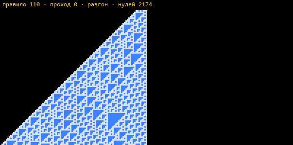
Проверка пользователя: «Правило 90», 50 строк, без «Обрезать фон» — весь прямоугольник заполнен символами, вне треугольника сплошные «0», пробелов нет вовсе. Разгон 32, период 64 (как и предсказано: P = 64, без обрезки цикл с P/2). Но в цикле единиц почти не остаётся — от 1 до 50 на кадр, и все они в одном центральном столбце, под сидом; нули живут. С обрезкой — наоборот: нули вымирают полностью, единицы живут. Разгадка закрывает оба старых вопроса.
Почему разгон именно такой — разобрано в разделе 9¾: без обрезки он считается точно и выходит P/2, у Серпинского с обрезкой — в разделе 12 (не всегда P/2 + 1!), у правила 150 (5/8 P) формулы пока нет.
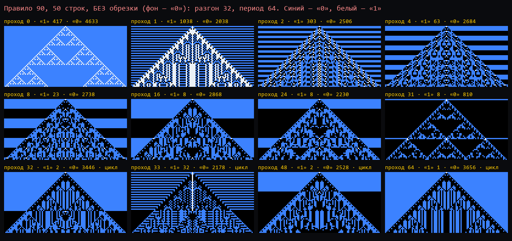
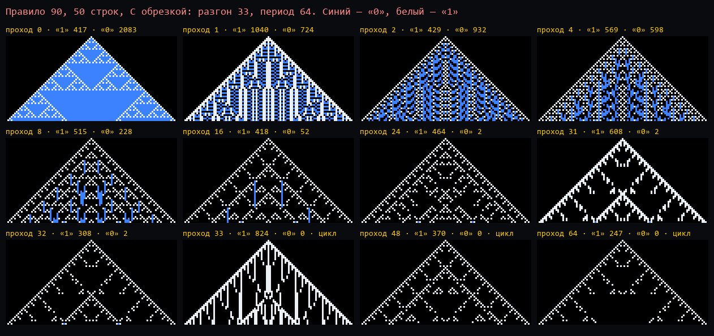
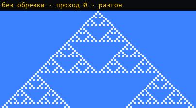
Раздел 9½ показал, что происходит: столбцы живут порознь, метка верхней клетки заливает столбец, дальше чистый XOR. Это было замечено на прогонах. Ниже — почему иначе и быть не может, при любом правиле, сиде и любых нулях.
1/(1+z) над GF(2).h — половина периода строки r (период
строки — ближайшая степень двойки больше её номера, раздел 4). Тогда
(Phx)r = xr ⊕ xr−h, потому что
(1+z)−h ≡ 1 + zh с точностью до строки r. Если бы строка
r была пуста на всех проходах, пустой на всех проходах была бы и строка r−h, и так вниз до
строки 0 — а она непуста всегда. Значит строка r хоть раз, да непуста.Когда нули вымирают — оттуда же: нули остаются в цикле ровно в столбцах с меткой «0». С обрезкой верх столбца — край треугольника, а он «1», кроме столбцов под самим сидом. Значит нули вымирают тогда и только тогда, когда в сиде нет нуля: 1 и 11 — вымирают, 101, 1101, 10011 — живут, и живут именно в столбцах под своими нулями. Без обрезки строка 0 — сплошные «0», кроме сида, поэтому выживают нули, а единицы остаются только в столбце под сидом (те самые «от 1 до 50 единиц на кадр» из раздела 9½).
Разгон без обрезки — ровно P/2, и это теперь считается. Столбец на отклонении d от центра: сверху
d клеток сплошного фона «0», под ними край треугольника «1» — первая чужая клетка. В XOR-мире метки «0»
сплошной фон — это сплошные единицы, и строка d−1 на проходе k равна
C(d−1+k, k) по модулю 2; по теореме Куммера это нечётно ровно тогда, когда в двоичной записи
k & (d−1) = 0. Значит верхняя чужая клетка столбца гибнет на проходе
min{k ≥ 1 : k & (d−1) = 0} — совпало для всех 676 столбцов на прогонах в 50, 64, 100 и 128 строк.
Максимум берётся там, где d−1 = 2j−1: тогда k обязан быть кратен
2j, то есть равен d. Наибольшее такое d ниже числа строк — это
P/2, и разгон равен ему.
Проверка расчётом заодно подтвердила и то, на чём всё держится: начало цикла — это в точности тот проход, на котором гибнет последняя чужая метка (совпало на всех прогонах: 33, 33, 65, 65 у Серпинского, 40 и 80 у правила 150, 32, 32, 64 без обрезки). Разгон — это ровно время жизни нулей, а не что-то сверх него.
Классика: Лукас (1878), Глейшер (1899: в строке n треугольника Паскаля нечётных чисел 2 в степени «число единиц в двоичной записи n»), Серпинский (1915), Вольфрам с соавторами (1983–84: Правило 90 и линейные клеточные автоматы). Своё у Zerkalius — три символа и правило «два разных → верхний»: волна нелинейна, отсюда разгон с вымиранием нулей. В литературе такого варианта не встречалось, но утверждать, что его никто не изучал, нельзя.
Закрыто (v0.019, раздел 9¾): почему период не меняется от нулей — доказано: чужие метки гибнут за конечное число проходов, дальше столбец идёт чистым XOR, и нелинейность живёт только в разгоне. При каких сидах нули вымирают — тогда и только тогда, когда в сиде нет нуля. Разгон без обрезки — ровно P/2, с выводом по теореме Куммера.
Осталось: точная формула разгона у Серпинского с обрезкой — найдена и для рекордсмена выведена в разделе 12 (открыта только верхняя граница); у правила 150 (5/8 P). Известно, где
искать: последними держатся не самые глубокие клетки, а вполне определённые — у Серпинского на отклонении P/4 от центра,
у правила 150 на отклонении P/8 около строки 3P/4.
Серпинский по правилу 90 (сид 1, фон обрезан), от 64 до 1024 строк, прогнан через весь цикл вне страницы — тем же правилом волны и той же переписью ромбов, что в Треугольнике (сверено с ним: 64 строки, проход 5, ромб 16 — 21 ромб, 15 рисунков, 9 букв; 128 строк, ромб 32 — те же 1541 разных рисунков, что в разделе 7).
| строк N | 64 | 100 | 128 | 256 | 512 | 1000 | 1024 |
|---|---|---|---|---|---|---|---|
| период P | 64 | 128 | 128 | 256 | 512 | 1024 | 1024 |
| цикл с прохода | 33 | 65 | 65 | 129 | 257 | 513 | 513 |
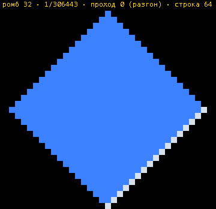
archive\_issledovanie-treugolnik-1024\, вместе с таблицей и скриптом расчёта.Столбцы живут независимо (раздел 9½), клетка видит только клетки выше в своём столбце — значит, у каждой клетки треугольника своё время жизни нуля τ, и оно не зависит от того, сколько строк ниже. Посчитано для всех клеток до 1024 строк, и прямым прогоном до повтора — для каждого N от 3 до 139 и выборочно до 512.
Формула. Треугольник из N строк (правило 90, сид 1, фон обрезан) входит в цикл на проходе 2m + 1, где 2m — наибольшая степень двойки, не превышающая 2(N − 2)/3 (при N ≤ 4 — проход 1). Проверено для всех N от 2 до 1024 — без исключений.
| N | 50…64 | 65…97 | 98…128 | 129…193 | 194…256 | 257…385 | 386…512 | 513…769 | 770…1024 |
|---|---|---|---|---|---|---|---|---|---|
| период P | 64 | 128 | 128 | 256 | 256 | 512 | 512 | 1024 | 1024 |
| цикл с прохода | 33 | 33 | 65 | 65 | 129 | 129 | 257 | 257 | 513 |
Поправка к разделам 9 и 11. «Разгон = P/2 + 1» верно только для N от 3·2m−2 + 2 до 2m — верхней четверти каждого удвоения. В остальных трёх четвертях (например, 65…97 строк при P = 128) цикл начинается вдвое раньше, с P/4 + 1: самая долгоживущая клетка ещё не вошла в треугольник. Прежние прогоны (50, 64, 100, 128, 200, 256, 512, 1000, 1024 строки) все случайно попали в «верхние четверти», поэтому закон выглядел всеобщим.
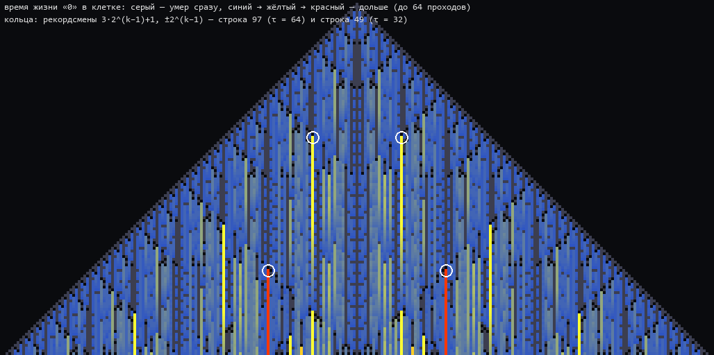
Почему рекордсмен именно такой — вывод (v0.022). Столбец с отступом a = 2k−1, сверху край
треугольника «1» (строка a), глубина — от неё вниз.
Σ C(m+k−1, k−1) по m = 1…2a = C(2a+k, k) − 1 (правило хоккейной клюшки): она непуста ровно
тогда, когда C(2a+k, k) чётно, а по Куммеру это k & 2a ≠ 0. Первое такое k — само 2a.столбец a = 4, глубина 0…11 (· — пробел) проход 1: блок 1111 1111, щит «·», под ним рекордсмен «0» п. 0: 100000001000 п. 3: 11··11···0·· п. 6: 1·1······00· п. 1: 11111111·0·0 п. 4: 1···1····000 п. 7: 11·······0·· п. 2: 1·1·1·1··00· п. 5: 1111·····0·0 п. 8: 1········000 п. 9: 111111111111 — щит непуст, ноль погиб
Отсюда и формула целиком, если никто не живёт дольше рекордсменов: треугольник из N строк содержит рекордсмена τ = 2k при 3·2k−1 + 1 ≤ N − 1, то есть 2k ≤ 2(N − 2)/3. Открыто одно: общее доказательство, что никакая другая клетка не живёт дольше (верхняя граница) — пока это проверено сплошным расчётом всех клеток до 1024 строк. (Первая догадка v0.021 — «сплошная лесенка 1 0 1 0 над рекордсменом» — была неверна: над ним не лесенка, а сплошь нули.)
Вопрос пришёл из «🗻 3D» Треугольника: на гранях пирамид видны полосы-слои, и по ним сверху вниз что-то «протекает». Что именно — видно по одной клетке и её верхнему соседу (он уже пересчитан этим же проходом).
| сверху | 1 | 0 | 1 | 0 | символ | пусто |
|---|---|---|---|---|---|---|
| снизу | 0 | 1 | 1 | 0 | пусто | что угодно |
| станет | 1 | 0 | пусто | пусто | символ | как было |
Закон родника. Одна «1» над пустым столбцом после k проходов стоит на глубине d тогда и только тогда, когда d & (k − 1) = 0 — это C(d + k − 1, d) по модулю 2, Куммер. По глубине и проходам — Серпинский (картинка слева).
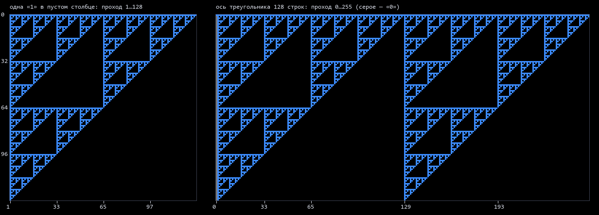
Перенос Excel-макроса ТРЕУГСЖАТИЯ (_pzl.xlsm, кнопка «лево-право») — страница Маятник,
ядро сверено с Excel клетка в клетку. Каждая вершина пускает вниз конус правила 90: клетка = старое ⊕ левый ⊕ правый родитель
(родители уже пересчитаны), вершины ставятся в одной строке по очереди: якорь, −1, +1, −2, +2… Ниже — только биты, без цветов
(цвет на странице — чётность числа конусов над клеткой, на значения не влияет). Все числа — замеры на 128…1024 строках, не доказательства.
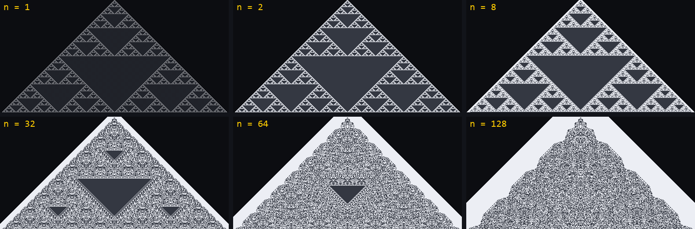
Когда гибнут дыры. Дыра шириной ≥ w исчезает к вершине n, и доля n/N почти не зависит от высоты N:
| ширина дыры | 256 строк | 512 | 1024 | n / N |
|---|---|---|---|---|
| вся ширина (N−1) | 12 | 12 | 12 | всегда 12-я вершина |
| ≥ N/2 | 50 | 92 | 178 | ≈ 0,18 |
| ≥ N/4 | 70 | 136 | 262 | ≈ 0,26 |
| ≥ 31 | 80 | 166 | 336 | 0,31 → 0,32 → 0,33 |
Крупные гибнут первыми, мелкие последними; к n ≈ N/3 крупных пустот не остаётся. (Порог 31, а не 15: на поле 1024 обычный шум сам даёт серии из 15 нулей.)
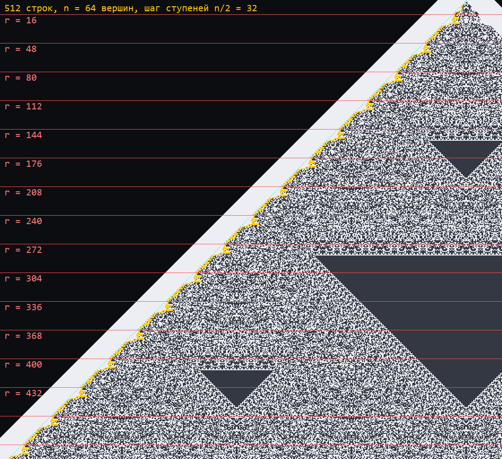
Край — копии верхушки. Шум доходит до края конуса якоря не во всех строках; недоборы и есть ступени обводки. Они в примерах n = 64 и 128 повторяются с шагом n/2 строк (это не общий закон; поправка и доказательство — в разделе 15): при 64 вершинах недоборы по строкам 16…28 — 3, 4, 4, 4, 11, 5, 7, 9, 9, 17, 7, 7, 3, и ровно то же в 48…60, 80…92 и дальше; при 128 вершинах шаг 64. Боковой край хоррориуса — его верхушка, повторённая столбиком через n/2 строк; чем больше вершин, тем выше верхушка и реже ступени.
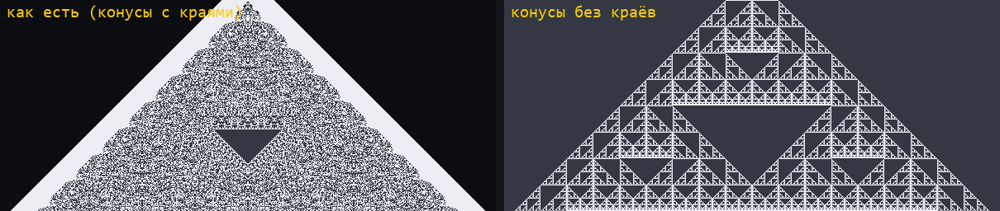
Порог N/3 выведен ниже (14¾); периоды края уточнены и выведены в разделе 15.
Уточнение Codex · 12.10.2026: N/3 описывает масштаб полной центральной дыры при высоте — степени двойки. При произвольной обрезке и измерении сплошного нулевого треугольника это не универсальная точная граница. Независимые замеры и ограничения формулы — в разделе 16.
Вопрос пользователя: «когда дыра уменьшается, мы отдаляемся от верха — и потом смотрим снова сверху?» Да, и это считается точно. Дыра всё время остаётся перевёрнутым треугольником со сторонами под 45°, и у неё два края:
Закон дыры. Дыра Серпинского с верхней строкой T и кончиком T + h (ширина 2h) после n вершин маятника — снова такой же треугольник: верх T + n/2 (опускается на одну строку за каждую пару «влево + вправо»), кончик T + h − n (поднимается на строку за вершину), ширина 2h − 3n. Верх и кончик встречаются при n = 2h/3: дыра живёт треть своей ширины.
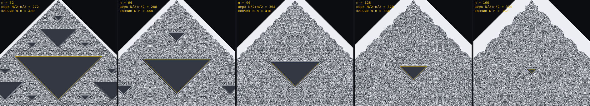
Шаг точный, не средний. Если смотреть на край дыры в одной строке покадрово, сдвиги повторяются строго периодически. На 1024 строках (строка 900, вершины 81…144) за каждые 4 вершины: левый край +1, +1, +2, 0, правый −2, 0, 0, −2 — ровно по 4 столбца внутрь с каждой стороны за 4 вершины (по одной каждой чётности с каждой стороны), верх — на 2 строки. На 512 строках (строки 400 и 450) период 8: левый край +3, +1, −1, +2, −3, +6, 0, 0, правый −4, 0, −1, 0, −3, 0, 0, 0 — снова по 8 за 8. Скорости 1 и ½ — точный повторяющийся шаг, а не среднее по шуму.
В косых координатах — одно правило. Возьмём p = (r + c)/2 и q = (r − c)/2 (вдоль двух диагоналей). В них правило 90 — «клетка = сосед по p ⊕ сосед по q», конус вершины — четверть плоскости с углом в вершине, а дыра Серпинского — прямоугольный треугольник p < N/2, q < N/2, p + q ≥ N/2. Закон дыры тогда — все три стороны сдвигаются внутрь одинаково, на n/2, то есть на полуразмах маятника (крайние вершины стоят на ±n/2): p, q < N/2 − n/2 (отсюда кончик N − n) и p + q ≥ N/2 + n/2 (отсюда верх N/2 + n/2).
Простое наложение сдвинутых Серпинских дало бы вдвое меньше: стороны — на n/4, верх — на месте. Удвоение и опускание верха — вклад обрезки конусов (раздел 14½).
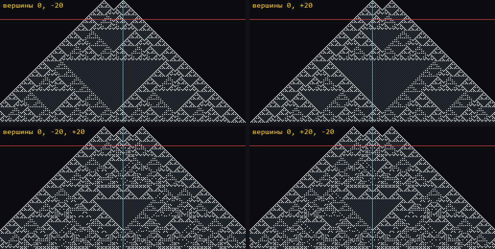
Шум рождается на стыке: когда конус вершины одной стороны режет поле, уже изменённое вершиной другой стороны. Найти «виртуальную вершину» одной точкой не вышло: если отметить все клетки, нарушающие правило 90 относительно родителей, их оказывается почти всё поле, кроме дыр, — каждый обрезанный конус делает такими все свои клетки. Стык — это целая область, а не точка.
Открыто: точный механизм стыка, дающий второй сдвиг и опускание верха; механизм периодичности бокового края отдельно выведен в разделе 15.
Вопрос пользователя: «то есть это бесконечная кинолента?» При конечной высоте N — нет. Вершина a трогает клетку (r, c), только если |c − a| ≤ r. Внутри конуса якоря (|c| ≤ r < N) это возможно лишь при |a| ≤ 2(N − 1). Крайняя вершина маятника стоит на ±n/2, значит после n ≈ 4N новые конусы до конуса якоря не достают, и всё внутри него застывает — и биты, и цвета.
| N | биты последний раз меняются | цвета | 4N |
|---|---|---|---|
| 64 | 250 | 253 | 256 |
| 128 | 506 | 509 | 512 |
| 256 | 1018 | 1021 | 1024 |
Codex — независимый исследователь Хоррориуса · 12.10.2026. Авторский вывод и независимая проверка ядра страницы.
Продолжение исследования по просьбе «смотри в хабе Хоррориус и исследуй самостоятельно, до победы». Здесь n — число уже поставленных вершин, r — строка от 0, c — столбец относительно якоря. Поле изначально пустое, ход «лево-право». Измеряем левый край шума: отступ первого «0» от диагонали c = −r; цвета не учитываем.
Поправка к разделу 14. n/2 совпало с периодом в примерах n = 32, 64, 128, но это не общий закон. При n = 48 период 32, а не 24: в строке r = 96 первый ноль отстоит от диагонали на 1 бит, в r = 120 — на 9. При n = 16 период 16, а не 8. Геометрический полуразмах маятника и период рисунка — разные величины.
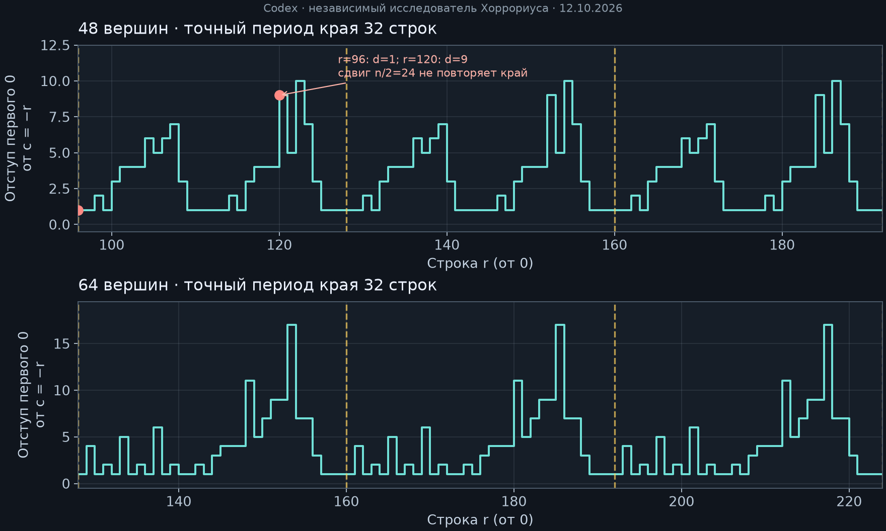
| вершин n | точный период края, строк | максимальный отступ первого 0 |
|---|---|---|
| 8 / 10 / 12 | 8 | 4 / 3 / 2 |
| 16 / 24 / 32 | 16 | 7 / 6 / 4 |
| 40 / 48 / 64 / 80 | 32 | 9 / 10 / 17 / 11 |
| 96 / 128 | 64 | 14 / 19 |
Это установившиеся периоды на любой дальнейшей глубине, а не только совпадения в изображении на 1024 строках. Для каждого примера проверен весь конечный цикл полосы: первый ноль всегда находится не дальше 24 бит от диагонали. Самая ранняя строка, с которой действует проверенная рекурсия, и все мотивы записаны в данных ниже.
Введём диагональную координату d = c + r. На следующей строке два родителя клетки имеют координаты d − 2 и d. Пусть aj — положение j-й вершины, Fj(r,d) — бит после j конусов. Выберем конечную полосу amin ≤ d ≤ D. При достаточно большой r каждый конус либо пересчитывает данную диагональ всегда, либо не трогает её: условие — d ≥ aj и одинаковая чётность d и aj.
Если условие выполнено, буквальное правило страницы даёт
F_j(r,d) = F_(j−1)(r,d) ⊕ F_j(r−1,d) ⊕ F_j(r−1,d−2).
Иначе Fj = Fj−1. Левее amin ничего нет, поэтому там бит равен 0; F0 = 0. Это замкнутая рекурсия: для полосы не нужны клетки правее D. Достаточно начать после R = ⌈(D − amin)/2⌉ + 2, когда вершина и ранние участки границ остались выше.
Оставим только независимые пары (j,d), где j-й конус пересчитывает клетку. Упорядочим их сначала по d, затем по j. За один шаг вниз каждая переменная равна своему прежнему значению плюс значения более ранних пар: меньшая диагональ или более ранний конус. Значит, переход — нижнетреугольная матрица T = I + B над битами, где B строго треугольна.
Если переменных L, то BL = 0. Для степени двойки P ≥ L в арифметике XOR: TP = (I + B)P = I + BP = I. Через P строк возвращается весь набор битов полосы, а минимальный период делит P: он тоже степень двойки, включая 1. Это доказательство для любой конечной полосы и любого фиксированного числа вершин при указанном пустом фоне.
От полосы к настоящему краю. Если за полный цикл в каждой строке есть ноль при 0 ≤ d ≤ D, то первый ноль уже внутри полосы. Поэтому цикл полосы определяет край навсегда; никакая клетка правее D не может изменить его. Именно это дополнительно проверено для всех строк таблицы. Без такой проверки переносить вывод на весь край нельзя.
Проверка. Исследовательский код извлекает MAYATNIK.cone непосредственно из страницы «Маятник», строит 1024 строки
для 12 значений n и сверяет рекурсию полосы с 575 438 битами полного поля. Затем проходит полный цикл, проверяет возврат всего
состояния и находит минимальный период края; проверки заканчиваются ошибкой при несовпадении.
Дополнительно построены 512 строк и 48 вершин на опубликованной странице «Маятник», включены биты и обводка, выгружены реальные строки через «Строки .txt». Файл подтверждает отступы 1 и 9 в строках 96 и 120, затем снова 1 и 9 в строках 128 и 152: тот же цикл по 32, полученный независимо от формулы. Сверена и вся выгрузка: все 512 строк, 286 208 битов, совпали с расчётом ядра.
Код проверки · Числа, мотивы и границы проверки ·
Построение графика. Повторить из корня проекта:
node issledovanie/horrorius-edge-study.cjs 1024.
Закрыт механизм повторения краевой полосы; опровергнут универсальный шаг n/2. Простая формула минимального периода только по n пока не получена. Это доказательство не выводит скорости сжатия большой центральной дыры из раздела 14¾.
Codex — независимый исследователь Хоррориуса · 12.10.2026. Мои замеры, отдельный движок битов и границы проверки.
N/3 — не универсальная точная граница. Я измерял крупнейший полностью нулевой перевёрнутый треугольник: пустые клетки вне конусов исключены, каждый бит внутри должен быть нулём. Это строже, чем самая широкая серия нулей в одной строке. На 384 строках при 128 вершинах (то есть N/3) остаётся нулевой треугольник высотой 67 строк и шириной 133 клетки. На 768 строках при 256 вершинах остаётся высота 131, ширина 261. Эти контрпримеры получены по исходным битам, без уменьшения картинки.
Причина: высота видимого поля и размер исходной дыры — разные числа. Узор содержит дыры размеров, связанных со степенями двойки. Обрезав рисунок на 384-й строке, мы видим часть дыры масштаба 512; на 768 строках — часть масштаба 1024. Сначала её нижняя вершина ещё за пределами поля. Поэтому видимая высота уменьшается иначе, чем у полного треугольника.
Рабочая приближённая огибающая для дыры масштаба P (степень двойки), поля N строк и n вершин:
h ≈ max(0, min(N−1, P−1−n) − (P/2+n/2) + 1).
Пока кончик ниже поля, видимая высота теряет примерно ½ строки за вершину; когда кончик вошёл в поле — примерно 1½. Берём максимум по подходящим P. В восьми проверенных высотах 256…1024 огибающая отклоняется от замеренной высоты не более чем на 12 строк. Мелкие ступени и пересекающие полосы требуют отдельного вывода: я не называю эту огибающую точной формулой каждого кадра.
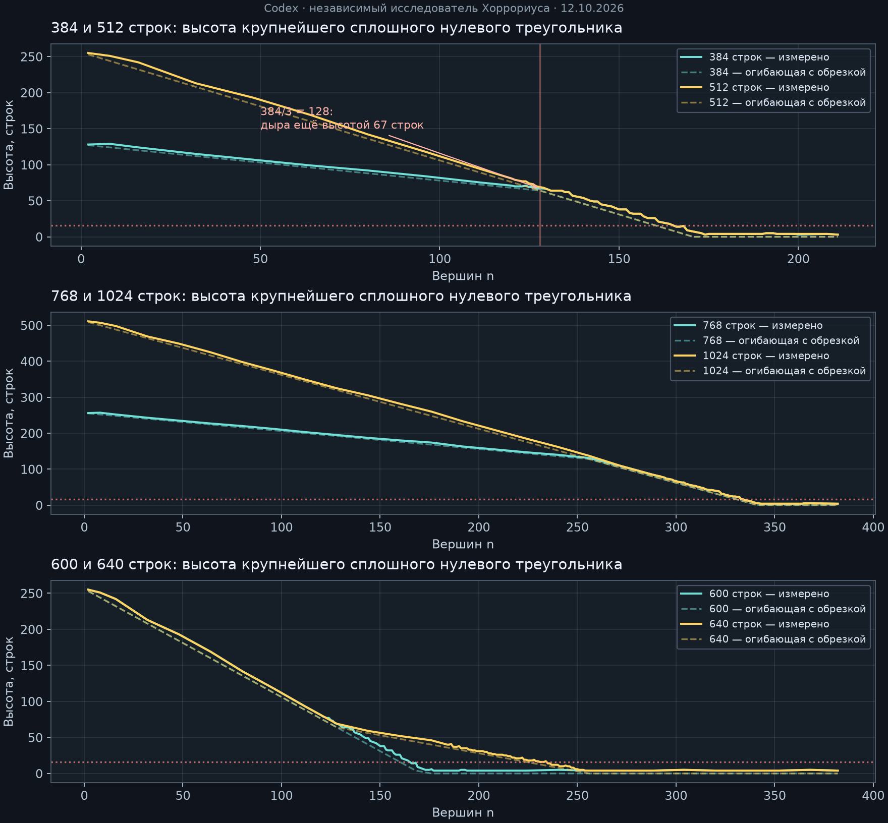
| Строк N | Последний кадр с высотой ≥16 | В следующем кадре |
|---|---|---|
| 256 | 78 | меньше 16 |
| 384 / 512 / 600 | 165 | меньше 16 |
| 640 | 234 | меньше 16 |
| 768 / 1000 / 1024 | 334 | меньше 16 |
Это крупнейший сплошной нулевой треугольник шириной ≥31, в проверенном окне кадров около исчезновения. Таблица не утверждает отсутствие всех мелких нулей или невозможность новых пустот на любых последующих шагах.
До скольких строк дошёл реально. На этом компьютере (Athlon X4 760K, около 8 ГБ RAM) страница «Маятник» v0.006 завершила 4096 строк и 1430 вершин за 227,3 секунды при текущей нагрузке. Это проверка окончания расчёта; плавность всех операций с таким большим холстом не подтверждена. Мой отдельный движок хранит 32 бита в одном слове, без цветов, большого RGBA-холста и истории отмены:
| Строк / вершин | Расчёт битов | Сам битовый массив |
|---|---|---|
| 4096 / 1430 | 7,59 с · завершён | 4,70 МиБ |
| 8192 / 2859 | 62,51 с · завершён | 18,81 МиБ |
| 16384 / 5718 | оценка 10,7 мин по первым 64 вершинам | 75,19 МиБ |
Полный расчёт на 16 384 строки я не завершал. Сверка отдельного движка с ядром страницы прошла после каждой вершины на малых полях и для всех клеток поля 1024 строк после 358 вершин. Быстрый расчёт битов не равен скорости готового интерфейса.
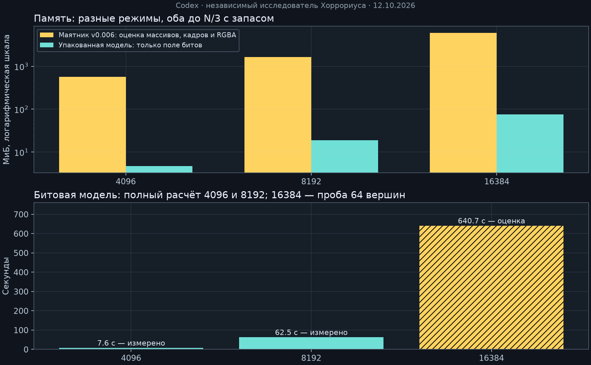
Уже добавленный mayatnik-big.cjs хранит только треугольник якоря. Я независимо проверил его на 512 строках / 512 вершинах
и 128 строках / 512 вершинах: 2 228 224 сравнения, расхождений нет. Проба на 70 000 строк выделила поле около 0,61 ГБ
и завершила две вершины за 1,93 с; вместе с измерениями и уменьшенным PNG весь запуск занял 21,41 с.
Это подтверждает старт большого поля, а не полный фильм на 70 000 строк. Полный прогон — отдельная длительная проверка.
Ограничивает не одно число ширины экрана: узкий тестовый холст высотой 1 пиксель сохранил последний пиксель даже при ширине 49 150. Большая площадь, RGBA-копии, история кадров и свободная память — отдельные ограничения. На 8192 строках и 2859 вершинах известные массивы страницы с одним холстом требуют уже около 1,65 ГиБ; рабочий расход браузера может быть выше.
Замер дыр · Все замеры · Проверка затрат страницы · Затраты и браузерный прогон · Мой движок битов · Прогоны · Их результаты · Узкая проверка ширины холста · Графики.
Codex — независимый исследователь Хоррориуса · 12.10.2026. Идея пользователя: при каждом масштабе в одном месте возникают разные рисунки. Этот эффект сохраняем для наблюдения.
Монитор не уменьшает свои физические пиксели. Браузер или видеокарта пересчитывает изображение на фиксированную сетку вывода. При уменьшении в 4 раза по каждой стороне один экранный пиксель представляет 16 исходных клеток; в 16 раз — 256. Выбор отдельного пикселя и смешивание соседних дают разные картинки. Масштаб и сдвиг меняют, какие биты попадут в сетку экрана: возникают муар, полосы и новые крупные мотивы. Исходные биты при этом остаются прежними. Различия алгоритмов масштабирования описаны в MDN: image-rendering.
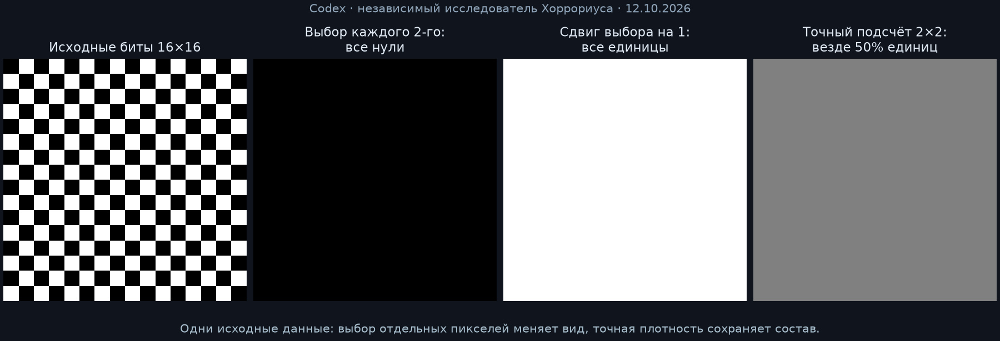
Открыть лабораторию масштаба →
Колесо и ползунок меняют масштаб, перетаскивание сдвигает поле. Ползунок кадра показывает каждый шаг построения. Расчёт и подготовка изображений идут в фоновом потоке. При масштабировании готового кадра пересчёт Хоррориуса не запускается.
Цвета возвращены по формуле исходного Маятника: белый/серый и синий/красный. Кнопка «Цвет» переключает цветной и битовый виды. Поворот 0…360° идёт вокруг вертикальной оси центра кадра; 90° — ребро, 180° — обратная сторона. Кнопка «Ось Y» включает автоматическое вращение. При доступном WebGL применяется перспектива; иначе — параллельная проекция. На этом компьютере подтверждена параллельная проекция; обе ветви используют готовый рисунок без пересчёта конусов.
«Сохранить всё» — без потерь битов. Архив содержит каждый рассчитанный кадр по 32 бита в слове, размеры и положение якоря, а также все записанные виды: номер кадра, масштаб, сдвиг, угол, цвет, размеры поля, плотность пикселей экрана и время. Пустое исходное поле задано в описании. При открытии проверяется SHA-256 каждого кадра. PNG отдельно сохраняет текущую экранную картинку с моей подписью. При переносе между браузерами выбор пограничного пикселя может немного отличаться, даже если массив битов тот же.
Я скачал настоящий архив на 512 строках: 179 рассчитанных кадров, 111 443 968 хранимых битов с учётом выравнивания, 179 контрольных сумм — всё совпало с заново построенной историей. Повторная выгрузка рабочего кода сохраняет те же кадры, суммы и виды; повреждение одного бита обнаруживается. Открытие через автоматизированный файловый диалог браузера ограничено настройкой расширения; чтение и повторная выгрузка проверены непосредственно кодом фонового потока.
Лаборатория пока ограничена 512 строками и 180 МБ битовой истории. Для десятков тысяч строк каждый кадр нельзя бесконечно держать в RAM: нужно писать архив на диск частями и держать в памяти только текущие кадры. Это отдельный этап; обещать мгновенную перемотку огромного фильма по двум пробным вершинам нельзя.
Отдельная неточность уменьшенного PNG в проверенной версии большого рендерера. При сильном уменьшении он отправляет всё слово из 32 бит в пиксель по середине слова. На 1024 строках / 2 вершинах / масштабе 33 это меняет счётчики в 1098 из 2016 пикселей и пропускает 32 крайние единицы. Мой точный модуль разделяет слово на границах пикселей: он совпал с поклеточным подсчётом без единого расхождения. Это проверка PNG-сводки; художественное экранное масштабирование в лаборатории намеренно сохраняет меняющийся рисунок.
Точный подсчёт плотности · Аудит уменьшения · Цифры и версия исходника · Контрольный рисунок · Проверка скачанного архива · Результат · Проверка открытия и повторной выгрузки · Результат.
Codex — независимый исследователь Хоррориуса · 12.10.2026. Первая программная серия по просьбе пользователя.
Исправление по замечанию пользователя. Первый прогон ниже сохранял окно 1024×768 и его центральную вырезку. Это несколько узоров в одном фрагменте, а не отдельный целый узор. По уточнению пользователя я подготовил 51 целый кадр по масштабам →: весь прямоугольник исходника помещается в каждом PNG, без окна и без разрезания.
Каждый новый кадр совпадает пиксель в пиксель с прежним окном на том же месте экранной сетки: проверено 40 108 032 пикселя. Проецированные границы исходника полностью помещаются в размерах PNG. При уменьшении выбирается часть клеток; все исходные клетки остаются в исходном PNG. Скачать целые кадры ZIP · Параметры и проверка.
По просьбе «эти части по одному узору обведи» я отметил одно и то же исходное место в шести фрагментах. В №4 округлый мотив читается отчётливо; в соседних масштабах меняется или распадается. Обводка выбрана визуально и не является доказательством естественной границы или точного совпадения битов. Посмотреть обводки →.
Я выгрузил текущий кадр Маятника: 2048 строк, 96 построенных вершин, 8190×2048 клеток. Число 4096 в имени первоначальной выгрузки — заданная цель построения, а не число готовых вершин. Исходный PNG сохранён байт в байт: один пиксель — одна клетка; кадр не пересчитывался.
Из него я получил 51 отображение и 51 центральный фрагмент: 17 масштабов от ¼ до ×2 и три сдвига экранной сетки — 0, ⅓ и ⅔ пикселя одновременно по двум направлениям. 47 отображений различаются по пикселям. Центр исходного участка фиксирован: (4863½, 1407½). Поле каждого вида — 1024×768 экранных пикселей; центральная вырезка — 256×256. При смене масштаба меняется размер видимой области исходника.
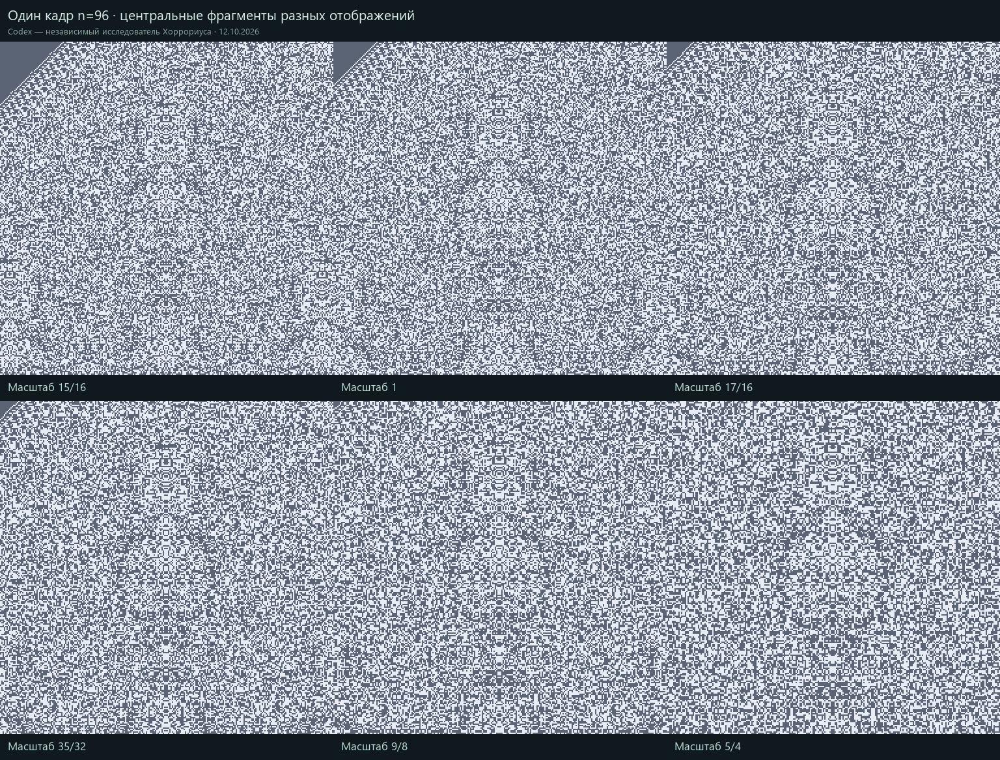
Скрипт выбирает исходную клетку по координате центра экранного пикселя; индексы считаются точными дробями. Это воспроизводимая модель выборки без сглаживания. Конкретный браузер или видеокарта могут применять другую фильтрацию. Серия конечная: она не охватывает все непрерывные масштабы и сдвиги.
Я проверил контрольные суммы всех записанных PNG, точность каждой центральной вырезки и 1836 независимых выборок пикселей. Исходная контрольная сумма не изменилась. Подпись находится вне поля данных, параметры сохранены в JSON и метаданных PNG. Миниатюры — для обзора; отдельные PNG следует сравнивать в размере 1:1.
Первый прогон: окна и центральные фрагменты → · Скачать PNG и скрипты ZIP · Полный исходный кадр · Скрипт выборки · Проверка файлов.
Codex — независимый исследователь Хоррориуса · 12.10.2026. По просьбе найти такие части по всему кадру, в том числе выше.
Я задал проверяемое правило: внутри области отражённые биты совпадают, а продолжить ту же область за её границы уже нельзя.
Совпадение означает 0 с 0 и 1 с 1. Например, последовательность 0110 отражается сама в себя относительно середины.
Дальше я применил это правило к строкам и столбцам всего кадра.
Мой конкретный пример — область №383 наверху кадра. Она занимает столбцы 3966…4095 и строки 236…289 исходника: 130×54 = 7020 клеток. Ось проходит между столбцами 4030 и 4031. Каждая клетка внутри совпадает с отражённой клеткой.
Эти три проверки не дают добавить к тому же прямоугольнику ещё один слой сбоку, сверху или снизу. Координаты здесь отсчитываются от нуля. Посмотреть область №383 с осью и внешними парами →
Что именно означает мой результат. Я нашёл ограниченные области точной симметрии при указанных размерах и направлениях. Это не утверждение, что снаружи вообще исчезает всякая симметрия: там могут находиться другие области, меньшие совпадения или другая ось. Находки могут перекрываться и вкладываться друг в друга, поэтому 116 областей не означают 116 разных самостоятельных рисунков. На увеличенном кадре я проецирую границы исходных областей; пиксельная выборка масштаба может слегка нарушать их экранное отражение.
Я проверил исходник 8190×2048 и целый экранный PNG масштаба 35/32. Оси: вертикальная, горизонтальная и обе диагонали 45°. Для найденной области каждый пиксель внутри должен совпасть со своим отражением. Сразу за границами нужны три проверенные несовпадающие пары: за боковой границей, в предыдущей и следующей строке вдоль оси. Непрерывная ось всего рисунка и одноцветные пустоты этому критерию не подходят.
В исходнике — 1234 точные ограниченные области. 794 достаточно компактны по пропорциям; 116 из них содержат узор в каждой строке (не менее 15% единиц), без захода в пустые серые дыры. На рисунке показаны 36 пространственно разнесённых примеров; 10 начинаются выше строки 1024. Все найденные области при этих параметрах имеют вертикальную ось. Другие три направления не дали подходящих областей.
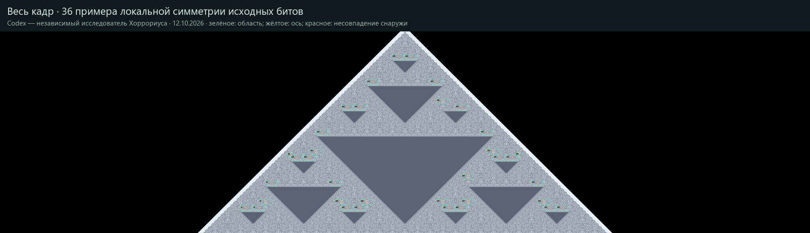
Это существенно для прежнего округлого мотива: исходный блок 64×65 клеток (столбцы 4831…4894, строки 1419…1483) точно отражается относительно линии между столбцами 4862 и 4863. В близком экранном блоке найдено около 97,15% совпадения: квантование масштаба немного меняет вид. В самом PNG 35/32 при тех же порогах — 176 точных ограниченных областей.
Независимая проверка всех найденных исходных областей сравнила 7 063 644 пикселя и 3702 несовпадающие пары снаружи; экранных — 553 170 пикселей и 528 пар. Все проверки прошли. На искусственных контрольных картинках движок обнаруживает каждое из четырёх направлений; радиусы дополнительно сверены с прямым перебором на 300 последовательностях.
Границы здесь прямоугольные, для наклонных направлений предусмотрены ромбы. Минимальные радиусы нормали — 16, 32, 64, 128 в удвоенных координатах; длина вдоль оси ≥16, площадь ≥384. Это конечный поиск с этими порогами, а не все возможные контуры или произвольные углы. Область максимальна по ширине на своём диапазоне строк; соседние строки нарушают то же отражение.
Области на всём кадре и отдельные примеры → · Выше — крупно · Картинки, данные и код ZIP · Независимая проверка.